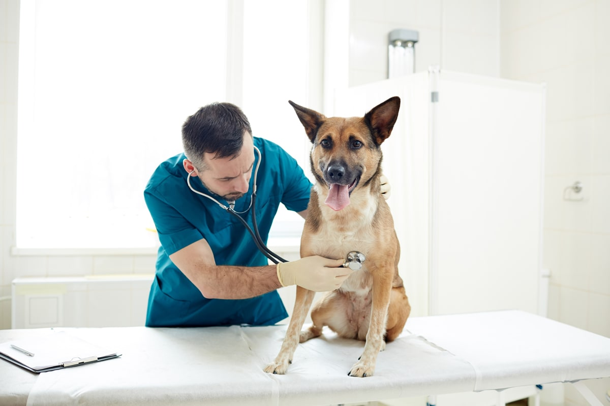
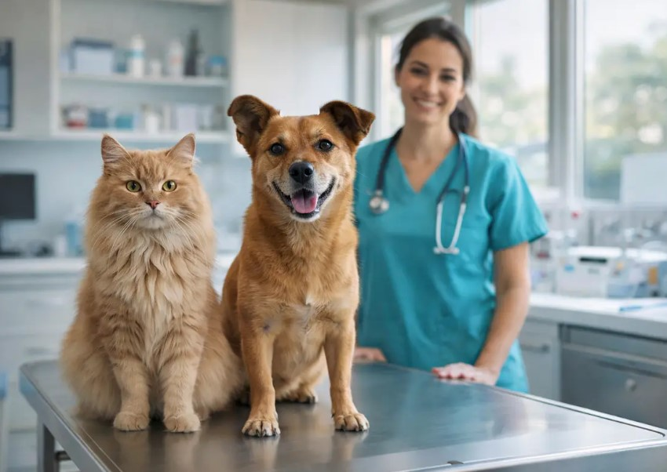
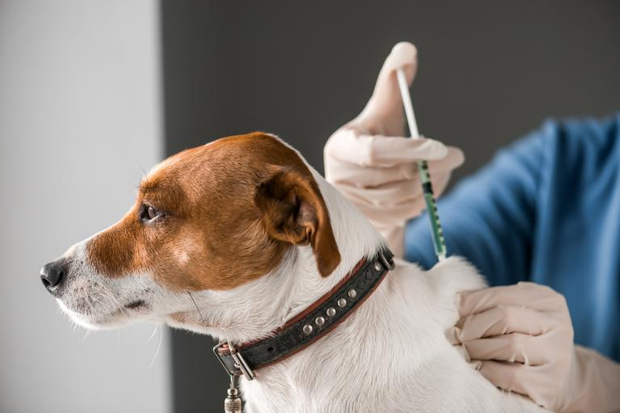

Cuidamos a tu mascota como parte de tu familia
Desde 2009 atendemos perros, gatos, conejos y aves en Rancagua, con un equipo de médicos y técnicos veterinarios dedicados a la salud y bienestar de tu compañero de vida.
Ver servicios disponibles
Servicios más solicitados
Una muestra de lo que puedes agendar en línea. Revisa el catálogo completo para ver todas las categorías de atención.
-

Consultas
Consulta general
$15.000
-

Vacunación
Vacuna antirrábica canina
$12.000
-

Desparasitación
Desparasitación interna mediana
$9.500
Conoce nuestras instalaciones
Un recorrido breve por el box de atención y el pabellón quirúrgico de Veterinaria San Marcos.